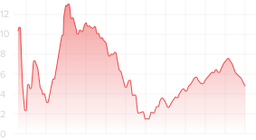

После полного изучения кода, проведения тестов на
соответствие наиболее важным параметрам и определения ошибок, аудитором составляется
подробное описание работы в формате наиболее удобном для заказчика. Владелец
смарт-контракта может использовать отчет по своему усмотрению: публиковать на
собственных информационных страницах, передавать инвесторам, делиться на GitHub.
Smart Contract
Work
Grafic

Рекомендации
Рекомендации
Серьезные нестыковки в коде или ошибки могут иметь разные
причины и последствия. Заказчик сможет получить мнение эксперта со стороны и
предпринять соответствующие меры. Нередко организация смарт-контракта отдается на
аутсорс, поэтому готовый отчет можно использовать в качестве аргумента при споре с
теми, кто писал код.